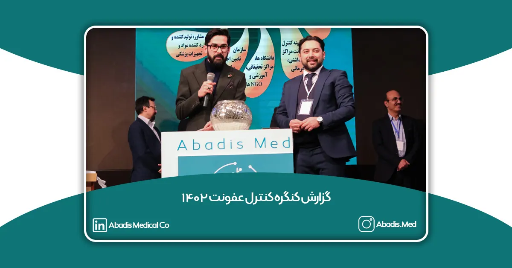
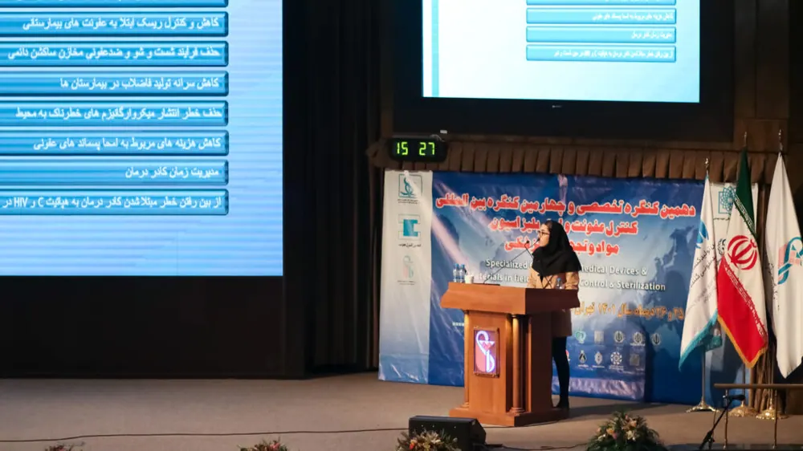
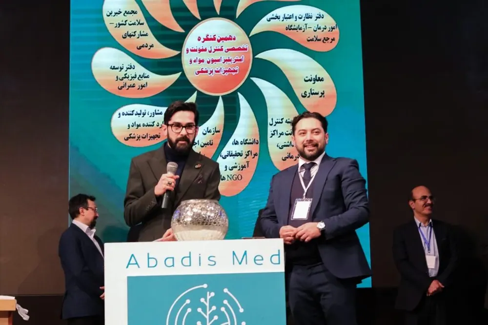
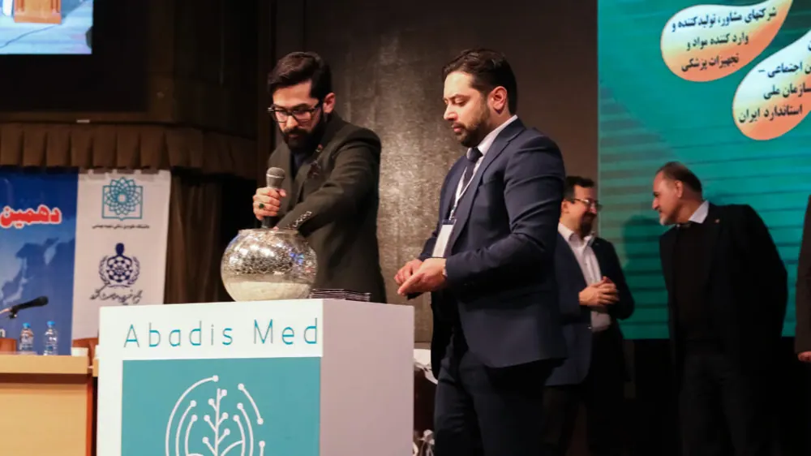
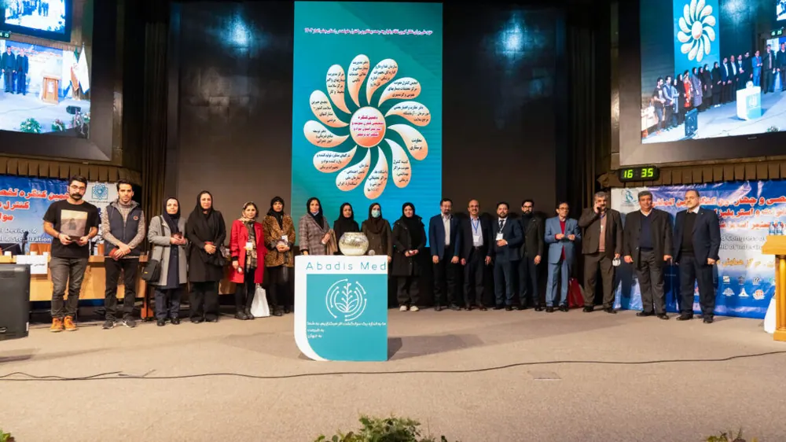
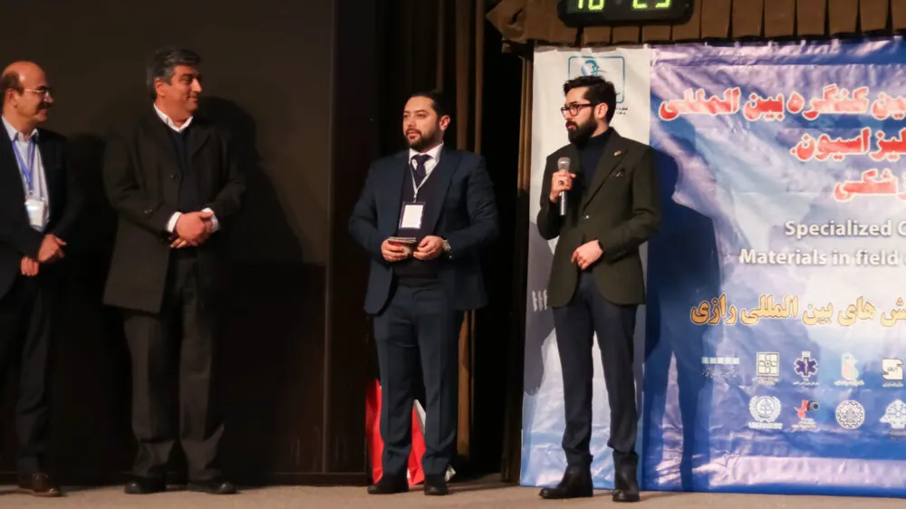
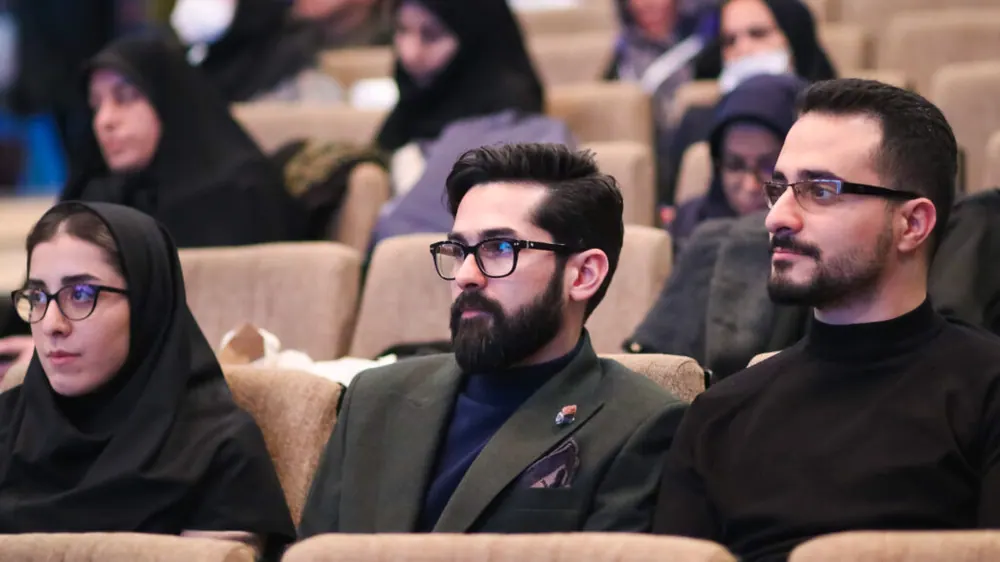

دهمین کنگره تخصصی و چهارمین کنگره بین المللی استاندارد های تجهیزات پزشکی و مواد حوزه کنترل عفونت و استریلیزاسیون در تاریخ 25 و 26 دی ماه 1401در سالن همایشهای رازی از ساعت 8 الی 17 برگزار گردید؛ و حدود 54 شرکت تجهیزات پزشکی فعال در این حوزه در این کنگره حضور داشتند و حدود 3000 نفر از این کنگره بازدید کردند.
در تاریخ های 25 و 26 دی ماه 1401 باتوجه به برودت هوا و ادامه وضعیت کمبود گاز در برخی از شهرهای کشورمان و لزوم تمهید تصمیلات ضروری برای کاهش میزان مصرف گاز و همچنین تعطیلی مدارس و ادارجات، امکان تعطیلی دهمین کنگره کنترل عفونت نیز میرفت که با درایت برگزار کنندگان و سالن همایشهای رازی به بهترین شکل برگزار گردید؛ ولی این مشکلات موجب شد تا این کنگره با کاهش بازدیدکنندگان همراه باشد.
شرکت مخازن طبی آبادیس فعال در حوزه کنترل عفونت بیمارستانی در این کنگره نیز حضور به عمل رسانید، و غرفه آبادیس مورد بازدید و توجه تعداد بسیار زیادی از مسئولین کنترل عفونت و کارشناسان بهداشت و محیط بیمارستانها و دیگر افراد کادر درمان قرار گرفت.
همچنین کارگاه آموزشی شرکت مخازن طبی آبادیس در روز دوشنبه 26 ام دی ماه از ساعت 9:30 الی 10:30 با عنوان ” بهبود اثرات زیست محیطی ناشی از پساب های عفونی بیمارستان ها با استفاده از کیسه های ساکشن یکبار مصرف ” با حضور 50 نفر از شرکت کنندگان برگزار گردید، و در این کارگاه به بررسی و مقایسه مخازن دائمی و کیسههای ساکشن یکبار مصرف از لحاظ اثرات زیست محیطی،کنترل عفونت،هزینهها و دیگر ویژگیها نیز پرداخته شد.
در همان روز (26 دی ماه) مقاله علمی با عنوان بهبود اثرات زیست محیطی ناشی از پساب های عفونی بیمارستان ها با استفاده از کیسه های ساکشن یکبار مصرف توسط سرکار خانم نیلوفر شرفی مسئول واحد تحقیق و توسعه شرکت مخازن طبی آبادیس ارائه گردید.

در ساعتهای پایانی کنگره کنترل عفونت و در سالن اصلی قرعهکشی آبادیس برگزار گردید و 10 نفر از بازدیدکنندگان در این قرعهکشی برنده شدند.


گزارش تصویری از مجموعه آبادیس در کنگره کنترل عفونت:



گزارش ویدیویی از حضور آبادیس در کنگره کنترل عفونت:
ممنون از همراهی شما عزیزان گرانقدر و کادر درمان که همواره ما را در بهبود سیستم کنترل عفونت بیمارستانی یاری مینمایید.
برای مشاهده مقالاتی که به دهمین کنگره کنترل عفونت ارسال شده است؛ می توانید به این لینک مراجعه فرمایید.
- بهبود اثرات زیست محیطی ناشی از پساب های عفونی بیمارستان ها با استفاده از کیسه ساکشن یکبار مصرف: نوشته سرکارخانم نیلوفر شرفی
- مقایسهی نانو-واکسن ها و واکسن های بر پایهی mRNA در پیش گیری و کنترل مقاومت میکروبی: نوشته سرکار خانم هما فقیهی
- بررسی آلودگی های قارچی به ويژه عوامل موكورال (قارچ سياه) در هوای بخش های بستری بيماران مبتلا به كرونا در بيمارستان امام رضا (ع) شهر مشهد در سال۱۴۰۰: نوشته سرکارخانم شبنم بينايی تولايی، جناب آقای حسين شعبانی و سرکارخانم صفورا صفوی
- دستورالعمل اجرایی نحوه ضدعفونی ابزار و تجهيزات پزشكی: نوشته سرکارخانم آرزو پورداد،زهرا فروغی و منیژه شمس
- بررسی علل ایجاد پریتونیت در بخش دیالیز صفاقی مرکز آموزشی درمانی الزهرا (س): نوشته سرکارخانم آرزو پورداد،زهرا فروغی و زهرا بابایی
- نظام مراقبت عفونت های بیمارستانی و پیشگیری و کنترل عفونت های ناشی از ارایه خدمات سلامت